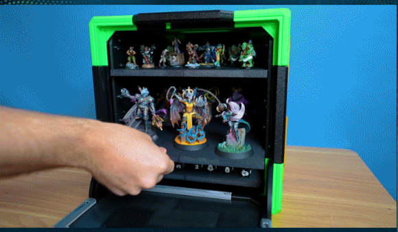
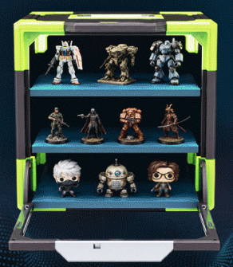

Captains Log

July 15th 2026
Do You Believe in Bigfoot?
I really enjoy cryptozoology. Do I think it's a valid scientific field? Nope! But that doesn't stop me from enjoying the topic. I think of it more like myth's. Are they true, their might be a nugget of truth somewhere in the idea and legend, but I don't think it should mold your outlook on life.
I think what makes Bigfoot such a compelling idea is the nature of being creeped out. I also think that pareidolia plays a large part in this. For those who do not know; pareidolia is the human ability to see faces in patterns and things. This is an outcome of natural selection and evolution. We successfully evaded predators, who evolved camoflauge, by being able to pick out faces and shapes in nature. If you consider spending time as a child gazing up at the clouds and picking similar shapes, that is a direct example of pareidolia at play.
The fringe sciences like cryptozoology, if you can consider it a fringe science, is at least something fun. I alos think everyone would love to find irrefutable evidence that he exists. I think this is because the world seems more or less conquered. We are all looking for something that represents that hope and the excitement of exploration. Also, all science seems fake, until we find the evidence that it's not!
GridCube Nickle and Diming Me
This is going to sound bad, as maybe I should have looked closer before starting my build, but man this GridCube project is costing me money! It started with having to buy screws, which I knew I would, then I had to by acrylic for a front glass, again something I new about prior. However, I also had to buy ball bearings, which like the screw was metric and had to be ordered.
On top of that I've gone through 1.5 rolls of black filament. 1.5 rolls of purple filament, and by the end of today that will be 2 rolls. 1 roll of color changing filament (for the corners). I still have to order more filmanet for the shelves because I don't think I have enough black for it.
I'll also want to make at least one more box, since I have 2 sheets of acrylic. I won't know the total I'll need until I see how many miniatures can fit in one box. I'm hoping 2 is enough, but I also want to make some grid cubes to hold my paint and possibly a few display cubes. Although I may use the two I make now as display and make some plain black ones for transport since they won't need a window.

